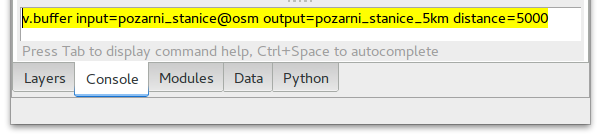

GRASS GIS je modulární systém, který disponuje rozsáhlou množinou
malých, ale výkonných programů (v terminologii systému modulů).
Poznámka
To odpovídá koncepci Unixu jako takového. Daný
program má za úkol vyřešit dílčí problém, měl by být co nejmenší a
poměrně jednoduchý.
Jednotlivé příkazy systému GRASS - moduly - mají konzistentní syntaxi,
jejich názvy se skládají z prefixu označujícího skupinu příkazů a
krátkého názvu napovídajícího účel modulu (viz tabulka níže). Například
modul v.buffer patří do skupiny „vector“ a je určen pro
vytvoření obalové zóny (tzv. bufferu) nad vektorovými daty.
Pokud jsou v příkazové řádce (Console) zadány
všechny povinné parametry (v případě modulu
v.buffer jde o parametry input,
output a distance), tak se modul spustí
přímo.

Obr. 40 Spuštění modulu v.buffer včetně zadání parametrů.¶
Příkazové řádka má historii, lze tedy moduly spouštět opakovaně
např. s mírnou obměnou parametrů.
Součástí základní instalace systému je více než 500
nástrojů (modulů). Další moduly si může uživatel
stáhnout v rámci tzv. Addons. Jde o moduly vytvořené uživateli systému
GRASS. Jejich kvalita a stabilita tak může být různorodá.
Addons moduly lze nainstalovat jednoduše z menu
Settings ‣ Addons extensions ‣ Install extensions
from addons.